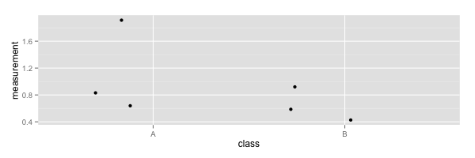
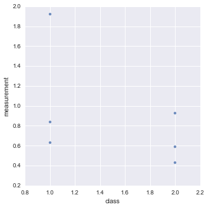
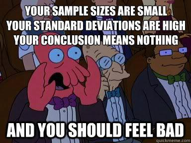
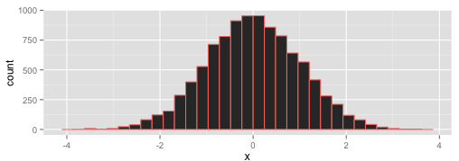

Lies, damn lies and statistics
Why do we need statistics? I don't mean 'statistics' in the sense of data - like when we ask what the attributes of something are1, but rather 'statistics' or 'stats' as the name for the set of procedures we have for asking questions about data. Statistics help us to deal with variability in data, to find differences (and similarities) reliably and to determine the accuracy of our experimental procedures2. These are really important aspects of biological experiment designs and statistics really help, but there is something about statistics that seems to turn biologists right off.
 source: giphy
source: giphy
As a consequence few ever get to truly love statistics for the adaptable and helpful set of tools that they are and end up using them not quite correctly. Plenty of kludges that interfere with strong conclusions happen. But it is possible to get on with stats. Loving your data with stats need not be more unpleasant than loving a mildly incontinent, flatulent, asthmatic puppy with one eye sealed shut from birth and a tendency to run into your furniture and wet itself. So in the spirit of encouraging universal data harmony here's an opinionated set of rules o' thumb to help you get on with your data.
Variability in measurements
People panic about variability for no good reason. Variability in measurements is a fact of life, just like the rain or like Manchester and you've got to live with its existence, no matter how wet you think you might get. I've seen scientists panic that variability in their data is their fault3 and that it's somehow going to get them into trouble. To avoid thinking of this they feel a need to squeeze everything into a summary statistic (a derivative number like the mean, median or mode) and an associated measure of variability (like variance or standard deviation/error) and move swiftly on.
The major problem is that you usually squeeze the life out of the data when you reduce it to one of these numbers.
Summary statistics can represent different things in the same way - two very different sets of numbers can have identical means and error bars. This fun4 perspective from Weissgerber et al5 really nails why.
source: Weissberger et al PLoS Biology, Figure 1
The mean and error bars only summarise our data well when the variation is 'normally' distributed6 (that is with the sort of pattern of spread that a genuine random number generator would give us). Of course, that assumption, that data are 'normally' variable is something that needs testing.
The take home here is that you shouldn't try to find a single number to represent many, without really knowing that your numbers are distributed in the normal way and that simply looking at the data in its raw, variable state is usually a lot better and more informative than means, error bars and boxplots.
Some examples for generating jitter plots
Let's see how we can create some plots for data that have a value on just one axis (or dimension) and a category or class on the other, I'll call these jitter plots because I don't know if they have a real name.
In R
Given a data file data.csv that looks like this
| measurement | class |
| 1.92 | A |
| 0.84 | A |
| 0.63 | A |
| 0.93 | B |
| 0.59 | B |
| 0.43 | B |
...
You can generate this

library(ggplot2)
data <- read.csv('data.csv', header=TRUE)
ggplot(data, aes(class, measurement)) + geom_jitter()
In Python
Given a data file data.csv that looks like this
| measurement | class |
| 1.92 | 1 |
| 0.84 | 1 |
| 0.63 | 1 |
| 0.93 | 2 |
| 0.59 | 2 |
| 0.43 | 2 |
...
import pandas as pd
import seaborn as sns
data = pd.read_csv('data.csv')
sns.lmplot("class", "measurement", data,fit_reg=False);
You can generate this

In Excel
Aha ha, hahaha, ha. Ha. No. Don't bother. Ultimately, developing visualisations (particularly complicated ones) in Excel erodes your precious time. It can do good stuff but all that pointing and clicking is not reproducible or automatic so the amount of time to re-do the thing when you need to make a single change can be as big as the initial time you put into creating it. Further, you'll have a hard time explaining how you generated a complex data visualisation at publication time 7. I really haven't got the time, space or energy to go through the all the clicks and selections you need to make such a plot in Excel. Also Excel's code is closed and that means it's a black box that you don't know what it does, really.
That said - this was done in Excel

actually though, it wasn't done in Excel in the way that we think of straight away, it was done with a script written in Microsoft's built-in Visual Basic language using the Excel sheet as a database. Which simultaneously proves my point about reproduction and negates (some of) my point about Excel. So, will I show you how to do it in Visual Basic? No. It's a horrible and restricted language8 such that if you're only going to try one language, you'd be better off trying something with wider utility.
Colour scales
Colour choice is often overlooked. In plots like the one above (a heatmap, basically) then colour choice can make or break the interpretation as much as fitting a bar and error points can. You're probably familiar with the problems colour blind people have, but this goes further.
When we create a colour scheme for a heatmap we tend to simply map each data to an rgb value of a colour. RGB gives us a colour description made of three numbers that represent the intensity of red, green and blue light that compose the colour. The issue here is in how the eye sees colours (remember the blue/black dress that looked white/gold?). The eye overweights brightness (or luminance) information in colours and makes some standout more than others independent of where they are in the colour scale. Look at this colour map and its corresponding luminance information. The high luminance in the cyan and yellow bit brings your eye to these colours preferentially.

source jakevdp.github.io
The result is you see the cyan and magenta as the highest values and can start to see patterns that aren't really in the data or you miss patterns that are there, see this blog by jakevdp.
This is a tricky problem to solve and tools like ColorBrewer and Kuler can help you define linear palettes that represent the underlying numbers evenly. Using the right colour scheme will help you see your data much better, and knowing your data well will help you pick the most informative colour scheme.
Sample size and variability
Sample size is a really important thing, there is a habit in biology to do three replicates and leave it at that. Look closely at the figures from Weissberger. Given any three of the spots in each panel, could you discern the differences between the panels? It's hard, right? And that's the point. The more variability you have or the more finely you want to divine a difference, then the greater the sample size you need. Three replicates may be enough to do a t-test but will it be enough to discern the difference and make the right conclusion? Maybe, maybe.

But don't feel bad. Get to know your data with a good, sensible plot and you'll have a much clearer picture. As your study develops you can use effect size calculations and power analysis to work out how many replicates will give you a good chance to detect a given difference from a variable sample.
Testing for differences (or similarities)
Determining whether a difference exists between sets of measurements is usually what scientists want to do with statistics. A thing here is that they tend to believe that getting a low p value on a test is proof of real difference. My favourite thing about statistical significance is that it wasn't intended to be taken as a proof of difference between sets, merely as a pointer that two samples might be different.
Here's what R.A Fisher said about p values
If P is between .1 and .9 there is certainly no reason to suspect the hypothesis tested. If it is below .02 it is strongly indicated that the hypothesis fails to account for the whole of the facts. We shall not often be astray if we draw a conventional line at .05
He's saying that p at < 0.95 is a fair start, but it isn't the whole story (hell, he'd know about p - he invented it). In addition to this very qualified statement he did say that this wasn't the whole story and pointed out it shouldn't override a scientists intuition over the situation.
in fact no scientific worker has a fixed level of significance at which from year to year, and in all circumstances, he 9 rejects hypotheses; he rather gives his mind to each particular case in the light of his evidence and his ideas 10
p values from tests are a useful tool, but don't use them blindly. And don't believe them blindly - if data look screwy, good p or not, they're screwy. There are basically two classes of test: Model-based and Bayesian.
Model-based difference testing
These tests basically work by referring to a model distribution of values from which you think your experimental values have come, a t-test assumes your data are a small sample from a bigger set of values that are normally distributed. In the simplest use case, the experimenter then sets up two outcomes in their lab-book (hypotheses): one is that there's no difference between the background distribution and the sample (the null hypothesis), the second that there is a difference (the alternative hypothesis) and runs the test.
The test then uses the properties of the background distribution to say how likely it is that the measurements come from that distribution. As an example, here's a histogram of a set of numbers chosen at random from a normal distribution with mean of 0, which will stand for our background distribution.

The test looks at the far tails of the spread and asks what the cutoff is that holds in the middle 95 %11 of the distribution - so just near -4 and 4 here. The logic is now that real values from the distribution only occur at this value 5 % of the time, so if you see these in your sample there is only a 5 % chance the sample numbers came from the background distribution. Only 5 % ?! That's unlikely, so you can say they probably don't come from that distribution and must be different. Note that you haven't proven that your samples are different from your background, you've just shown that they aren't so likely to come from their. You can reject the first, null hypothesis we set up, and (with only one other hypothesis left) accept the alternative.
Who feels that they haven't really proven anything and that this is a bit of a trick? I don't blame you. All you are really getting here is further evidence of a difference beyond that you can see in plots etc.
The pattern carries over to all sorts of difference tests, the underlying distribution may differ (it may be binomial, or hypergeometric etc) and you may need to complicate things by doing more than just two comparisons or have non-numeric data but the core process remains and the take home is still that you need to know your data.
It's too hard to give practical advice on which test to use and how to use it here. Instead I advise getting hold of Statistical and Data Handling Skills in Biology, an excellent little book by Roland Ennos available on Amazon that has advantages over other stats manuals in that it's slightly cheaper, has the words 'Don't Panic' in large friendly letters on the cover12 and it has a wonderful flow chart in the back that helps you work out which test you need. Get this book and use that flow chart.
The strength of the model-based tests is that you don't need to gather prior information to do tests, you can in fact just make some (hopefully reasonable and borne out by the data) assumptions and work from that point forward. The weakness comes when you don't have that background, or there's some sort of bias.
Likelihood of an event with Bayesian tests
These follow a different approach completely as they're an older approach than the model-based ones. To set the scene let's steal from Count Baysies much better explanation of Bayesian likelihoods and suppose we're in a space fighter on the edge of an asteroid belt being shot at by many enemy spacecraft. We have to choose whether to go into that asteroid belt and potentially get smashed to bits, or stay out and fight. A model-based approach asks "what is the distribution of life-expectancies of pilots that fly into an asteroid belt", naturally most don't last very long but there are a small (very small) proportion that last ages and some that get through, the proportion that last long enough to get out the other side gives us the probability of any old pilot getting through. So by looking at the distribution, we are forced to conclude that the likelihood is small and we shouldn't do it if we are the average pilot.
So that works for average pilots called Biggs or Porkins, but what if your pilot is called Han Solo? Everybody knows he's an amazing pilot and surely the odds are different for him?!
 source: giphy
source: giphy
Of course they are! This sort of pre-knowledge is called prior information and Bayesian tests can take this into account effectively changing the question to ask 'given that I know my pilot is Han Solo, whose life expectancy in an asteroid belt is huge, what are my odds of getting through the asteroid belt'. Prior information helps. And good prior information comes from knowing your data. Get to know your data.
Model-based approaches gain in that they remove the need for the actually quite clunky and subjective prior which can be hard to obtain, but they lose the extra accuracy that prior knowledge can bring. Fisher invented model-based approaches to do testing where Bayesian approaches let him down and the modern biologist's toolbox should contain both, each used appropriately in the light of a good understanding of the data. Get to know your data.
Bayes and confirmation bias
A significant problem with Bayesian logic is that it takes us close to confirmation bias if we are careless13. In particular, trying to claim that we can reason verbally in a Bayesian priors can drag us down. Here's an amusing quote
A Bayesian is one who, vaguely expecting a horse, and catching a glimpse of a donkey, strongly believes he14 has seen a mule.
The prior expectation of horse leads the hapless Bayesian to weight their data of donkey to conclude, wrongly, that they saw a mule. Prior information is bad if it can't be rejected. And many times it is hard to reject a favourite prior, this behaviour is a natural psychological bias called conservatism, that stops us insufficiently revising our hypotheses. To be safe Bayesian methods need good numbers, in fact they need numbers full stop. It's often not safe to use 'Bayesian thinking' as a general, everyday logical tool, because its dark side is quick, easy and seductive.
Post testing
Whether you get the p-value through a Bayesian or Model-based test, you still get downstream problems with p because they aren't 100% accurate (by definition - they're just likelihoods). Consider doing a test to get a p for the differential expression of a gene. The p its differentially expressed is 0.95. Now if you do three genes the p all three are differentially expressed isn't 0.95. It's the probability of the first AND the second AND the third so it's 0.95 x 0.95 x 0.95 = 0.86. The chance of the whole set of three being differentially expressed is only 0.86, so there's a much stronger chance that there is something wrong in your set. And it isn't clear which ones. This is called the problem of multiplicity and needs to be dealt with. Corrections like the Bonferroni and Benjamini-Hochberg help out to make these sets better and more robust. It bears repeating that this problem occurs whatever test you chose up front.
Classification accuracy
Often, we will want to classify stuff, that is to say, decide which group it belongs to or stick a label on it. So we might need to separate plants into diseased or resistant, or nucleotides as polymorphic relative to a reference.
At some point you use a classification test (presence of lesions on a leaf, or number of consensus bases that don't agree with the reference) and it's important to determine how accurate that classification is. There are two ways to get a classification wrong
 source: datavizblog
source: datavizblog
and two ways to get it right, a true positive and a true negative. With these numbers together you can work out statistics called sensitivity and specificity, which describe the proportion of real ones that you collect and the proportion of wrong ones that you exclude. The sums to calculate these are straightforward, Wikipedia has a good page.
Ideally of course you want 100 % sensitivity and 100 % specificity, but this isn't often possible because genetic screens leak or sequencers make errors and you get misclassifications. So the trick becomes to assess and tune the level of sensitivity and specificity to a useable and manageable level. When you've done this you get a clearer picture of the accuracy of your classifications and the reliability of any large datasets (like SNP calls) you may be generating with your classification and this is a useful step in getting to know your data.
Good dog?
All these are, in my experience, the basis of the knowledge you need to housetrain and make stats your faithful pet. They're not the whole thing by any means, but there is a common thread - get to know your data and get to love its variability. If you know the characteristics of your data you're going to have a much more comfortable time drawing conclusions and assigning the right confidence to tests and this can only lead to better more productive work.
Such as the track record of a sportsperson ↩
There are lots of other reasons, including but not limited to a desire to inflict pain and confusion on students and getting work accepted in journals by generating a magic number called 'p ' that removes the need for critical thought about how our data were handled ↩
It probably isn't ↩
No, it is fun ↩
It's called the Normal distribution because its the one we normally expect. If you're American you may consider calling it the Regular distribution instead. ↩
Saying 'figures were generated in MS Excel' in a manuscript really doesn't cut it as an explanation of how complex data plots are created. ↩
And Sylvain Raffaele who generated these is a man with severe skills. ↩
Presumably Fisher didn't believe that women took the same approach - or he's using old fashioned sexist language ↩
Almost Bayesian, huh? ↩
Or whatever your chosen p is ↩
It doesn't have 'Don't Panic' written on the cover. That's a different book ↩
Confirmation bias is very much the dark side of the Bayes Force. ↩
I can't find an attribution for this quote, though its all over the internet. That use of 'he' sounds a lot like Fisher, though. Just sayin'. ↩